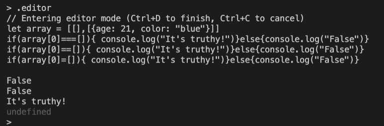

Node Drills
Introduction
In this exercise, you’ll be working through 3 different apps to practice node concepts. Each app (that requires starter code) has its own folder in the directory that you can download from Frodo.
Solutions
Some of the steps have boxes that can be expanded to show solutions! Before you view those, attempt the problem on your own.
App 1
Intro
There is no starter code for this app. You will be running commands in your terminal.
Step 1
Using Node’s built-in REPL feature, have the REPL show all of the modules it has access to.
Open an instance of your bash/terminal. Type node and press the enter key to open Node’s REPL feature. Press your tab key twice.
Step 2
Using the REPL feature, Look up the different methods that each of the following Node.js modules have: fs, util, events, path and http
Type the name of the module. Put a . at the end. Press your tab key twice. example: fs.
Step 3
Clear the node REPL.
Ctrl + L
Step 4
Write a simple function. Then execute the function.
For example:
function today() {
console.log(Date())
}
today()
Step 5
Run the following command: .help. See the different commands that are available to you. Enter into editor mode. Copy and paste the following code:
let array = [[],[{age: 21, color: "blue"}]]
if(array[0]===[]){ console.log("It's truthy!")}else{console.log("False")}
if(array[0]==[]){ console.log("It's truthy!")}else{console.log("False")}
if(array[0]=[]){ console.log("It's truthy!")}else{console.log("False")}
Then have the code evaluated with `Ctrl+D`

Step 6
Save all of your REPL session as a .js file
.save true-or-false.js
Step 7
Exit the REPL with Ctrl+D or .exit
Step 8
Load the file in REPL. The one that was just saved.
//Start REPL
node
//Load the file
.load true-or-false.js
Step 9
Change the value of the variable “array” to something else.
array = "blue"
App 2
Part 1
For this part, you’ll be building the same server twice. Why? For one, repetition is good and will help you remember how to do this. And two: in one file, you’ll be using require and in the other, you’ll use import. Solutions can be found in the solutions folder downloaded from Frodo.
Bring the
httpmodule into the practice.js file usingrequireUse the
createServer()method from thehttpmodule to make your serverUse the
listen()method from thecreateServer()method to get your server listening for changesUse node’s CLI to run our file (You know that this code is working if it has your
console.logmessage showing up in your terminal/bash)Kill the server process with
ctrl + cRepeat these steps in the practice.mjs file using
importinstead ofrequire
Part 2
In this part, you’ll be exploring more of the Node CLI. You’ll be accessing one of the servers you made in Part 1.
1. Check what version of Node.js you have on your computer using the Node.js CLI.
node -v
2. Check what other options you have with the Node.js CLI. Read through the list, and see what you have available!
node -h
3. Using the Node.js CLI, run NODE_DEBUG to watch the http module && run node on your practice.js or practice.mjs file.
Hint
Make sure that your path is correct! Questions to ask: What file do I want to run? How do I access that file from where I am at currently in my terminal/bash? You’ll know that this code is working if it has your console.log message showing up in your terminal/bash
Solution
NODE_DEBUG=http node node-drills-part-1/02/solution.js
4. Open your browser and access your local port that is defined in your practice.js or practice.mjs (the one that is running currently).
Once your browser is open, in the URL bar type: http://localhost:3001/
In the solution.js && solution.mjs, our
.listen()function is listening on port3001.Make sure your port is also whichever your
.listen()function is listening on for your practice.js OR practice.mjs function.You will notice this working if you see in your terminal some messages from
NODE_DEBUG
5. Kill the server process with ctrl + c
Part 3
Now let’s explore the node process object.
Open an instance of Node.js REPL by running
nodein your terminal/bash.Run
console.log(process). Take a moment to see what properties this object has.See if you can find and define the following properties on the object:
stdout
stdin
stderr
env
Hint
If it helps:
Copy the entire result from your terminal/bash.
Create a new file (ex. processObject.js)
Paste the entire result from your terminal/bash.
Collapse top levels of the object so it is more viewable.
Further Study
Here are some subjects we haven’t covered, but to be aware they exist:
The process object has the following functions:
stdout
stdout.write()
stdin
stdin.pipe()
stdin.read()
stderr
env
on
exit
App 3
Part 1
Let’s explore some of the built in objects and functions that Node.js gives us.
Open the log.js file found in the app-3 folder
Look over the file – we’ll be logging 6 things. The last one,
argumentsis an array containing the first 5.Run the file and explore the logs.
Recall that Node.js creates a function wrapper with these as arguments.
Part 2
Remember the solutions can be downloaded from Frodo. Try to do this one with both require and import for an extra challenge!
Create a new file in the app-3 folder called addTwoFunction.js (not
.mjs!).In that file, set
module.exportsto a function (expression or arrow) that takes in a number and returns that number + 2. (Hint: don’t makemodule.exportsan object, just set it directly to the function.)In practice.js and/or practice.mjs, bring in the function. Make sure you’re using
requireand/orimportcorrectly for your module type.In your practice file, invoke the function passing in a number.
Run the practice file.
Part 3
Let’s try something similar to Part 2, but with more functions this time.
Create a new file in the app-3 folder called functions.js (not
.mjs!).Set
module.exportsequal to an empty object. On this object we will define many properties that will be individual functions.Make a property called
minusOnewhose value is a function that will return any given number, minus 1.Make a property called
timesThreewhose value is a function that will return any given number, multiplied by 3.Make a property called
ageTextwhose value is a function that will return any given number, inside the string I amnumyears old!In practice.js and/or practice.mjs, bring in the functions. Make sure you’re using
requireand/orimportcorrectly for your module type.In your practice file, invoke each function (don’t forget to pass in a number!).
Run the practice file.
Challenge: If you’d like to, figure out how to export from an
.mjsfile. Don’t spend too much time on this though, or come back to it when you’ve finished the rest of the lab.
App 4
Introduction
In this section, you’ll be working with the fs and path modules. You should start with a .js file.
If you’d like to try .mjs when you are done with the first, you can. Recall that __dirname is not available in ECMAScript modules (.mjs) and that you’ll use require in .js or import in .mjs.
You can view both file types in the solutions.
Setup
Let’s practice working with fs. The Node.js file system module allows you to work with the file system on your computer. You can read more about it in their docs. Today we will use it to:
Create files
Read files
Update files
Rename files
Delete files
Bring the
fsmodule into thepractice.jsfile in the app-4 folder, saving it to a variable calledfs.
Create a file
You can use the .appendFile() method to make a file. .appendFile() will look to see if the file exists, if so it will add this data to the file, if it does not exist, it will create the file and add the data. .appendFile() takes in 3 parameters: 1) filepath or path to file that is supposed to exist, 2) data, which will most often be a string, and 3) a callback that will handle errors and success (can be defined outside or can be an anonymous arrow function).
Boiler plate hint
fs.appendFile("./", "", () => {})
In practice.js, call
fs.appendFile(), passing in a file path to a new file calledtext.txt, make sure you include the whole file path. (Hint: Your file path can start from where you run node in your terminal OR be absolute (all the way to the root)).Now write your second parameter: the data. This can be any string you wish (“Hello World” if you’re looking for ideas).
Last, your third param, a callback! This function should take in one parameter, usually called
errorerror. Iferris true, logerr; otherwise, logsuccess!(or similar).Run your practice.js file with
node. It should create the .txt file for you!
Read a file
You’ll start to see some similarities across these methods, like that they all accept a filepath as the first argument and take a callback as the last argument. In the case of reading, we can include an optional argument in between those for telling the system how to encode the file. Today we’ll just use utf8 for that value.
In practice.js, call
fs.readFile(), passing in a file path to you.txtfile.Now for the second parameter: the string
utf8.Last, your third param, a callback! This function should take in two parameters, usually called
errorerroranddata. Iferris true, logerr; otherwise, log the data.Run your practice.js file with
node. You should be able to see the file logged!
Update a file
What we are going to do is rewrite the text.txt file completely using writeFile(). You may notice you have a few “Hello World“‘s building up in that text.txt file. You will notice that as we use the .writeFile() method that the last method to run will be our .readFile(). All methods that write information will go first, starting from the top of our file. Be sure to have your .writeFile() method at the bottom of the file so it gets rewritten. You can read more about writing files here.
Using your knowledge from
appendFile(), try to write out thiswriteFile()function passing in a string other than your original string.If you can’t quite get it, go check the solution.
Rename a file
We can use .renameFile() to change the name of a file. This method will happen before writing files happens. It takes in 3 arguments: 1) the old/current path, 2) new/future path, and 3) a callback.
Try renaming
text.txtusing.renameFile().
Delete a file
To delete a file, use .unlink(). This method will run before renaming files. It only requires a filepath and a callback.
Try deleting your
.txtfile using.unlink().
Using Path
The Node.js path module allows more ways to access and interact with the file system. You can read more about it here.
File paths differ between operating systems, so using path (path.join() specifically) ensures that file paths are correct no matter the system.
path.join() can take as many arguments as you have, it will join them all into one path. All the arguments should be strings and they should not contain any slashes.
Try changing some of your file paths to use
path.join(). (Look in the solutions or read about.joinin the link above if you have questions).
When you are done, make sure to upload all your code to GitHub.